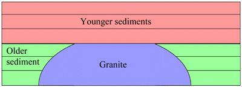

Feedback-Zusammenstellung
Feedback für April 1997
Ausgewählte Leserbriefe und TalkOrigins-Antworten aus April 1997.
Abbildungen aus dieser veralteten Seite

modernisiertes Archiv
TalkOrigins-ArchivArtikel, FAQs, Bibliografien und Antworten auf creationistische Behauptungen zu biologischen und physikalischen Ursprüngen sowie der Schöpfung/Evolution-Debatte.
Feedback-Zusammenstellung
Ausgewählte Leserbriefe und TalkOrigins-Antworten aus April 1997.
